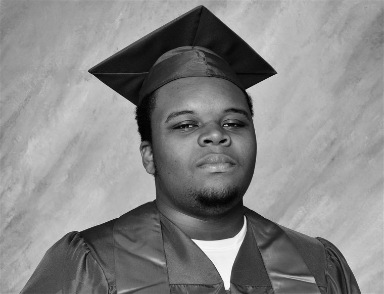
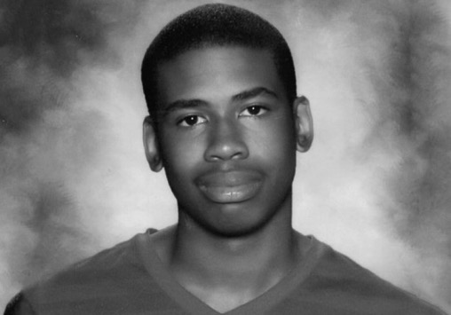
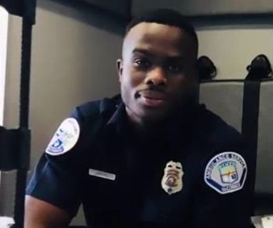
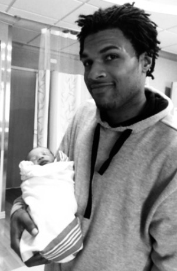
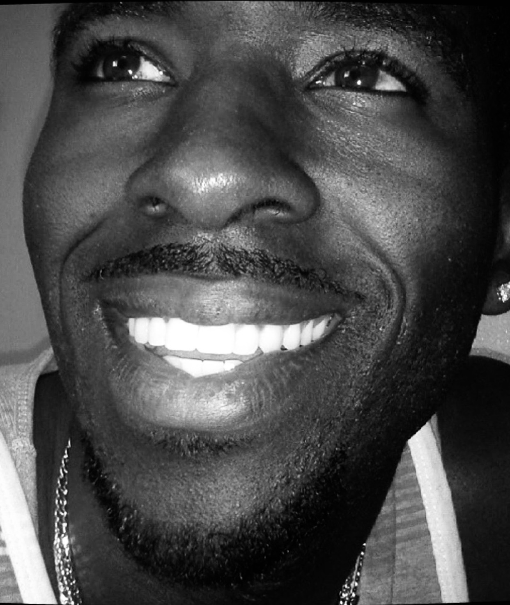
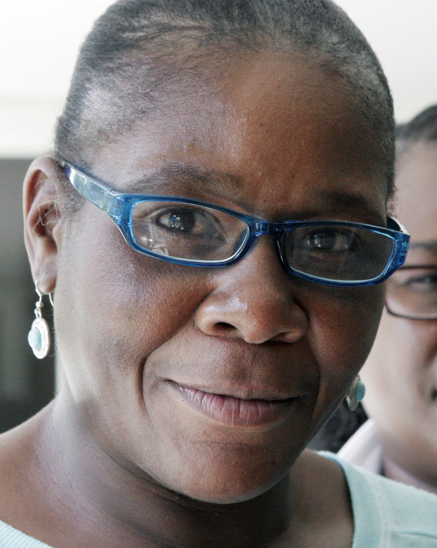
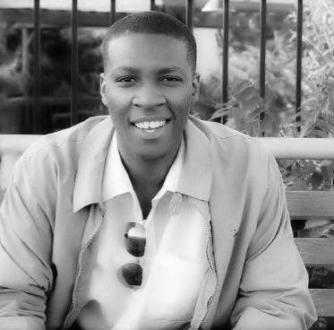
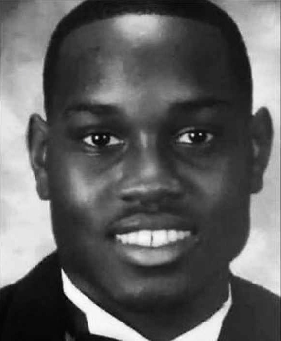
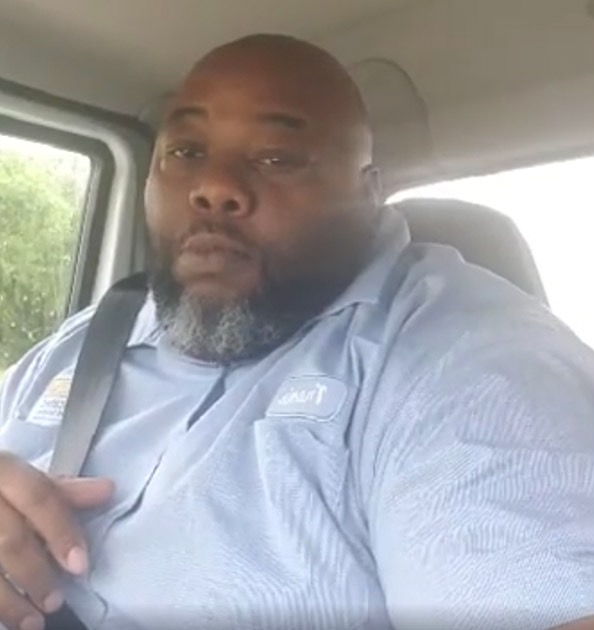

16th Street Baptist Church Bombing
Learn More
- Addie Mae Collins, 14
- Denise McNair, 11
- Carole Robertson, 14
- Cynthia Wesley, 14
Abner Louima, Age 30
Learn More
Incident, August 9, 1997
Lesandro Junior Guzman-Feliz, Age 15
Learn More
November 11, 2002 – June 20, 2018
Gabriel Taye, Age 8
Learn More
Died, January 26th, 2017
McKenzie Adams, Age 9
Learn More
Died, December 3, 2018
Akai Kareem Gurley, Age 28
Learn More
Died, November 20, 2014
Nigel Shelby, Age 15
Learn More
February 1, 2004 - April 18, 2019,
Alton Sterling, Age 37
Learn More
June 14, 1979 – July 5, 2016
Atatiana Koquice Jefferson, Age 28
Learn More
Died, October 12, 2019
Cyntoia Brown, Age 16
Learn More
Incident, August 6, 2004
Renisha McBride, Age 19
Learn More
Incident, November 2, 2013
Amadou Diallo, Age 23
Learn More
Died, February 4, 1999
Tyrique Hudson, Age 22
Learn More
Died, April 15, 2019
Botham Shem Jean, Age 26
Learn More
Died, September 6, 2018
Charleston Church Massacre
Learn More
- Clementa C. Pinckney, 41
- Cynthia Marie Graham Hurd, 54
- Susie Jackson, 87
- Ethel Lee Lance, 70
- Depayne Middleton-Doctor, 49
- Tywanza Sanders, 26
- Daniel L. Simmons, 74
- Sharonda Coleman-Singleton, 45
- Myra Thompson, 59
Christian Taylor, Age 19
Learn More
October 13, 1995 - August 7, 2015
Central Park Five
Learn More
- Raymond Santana, 14
- Kevin Richardson, 14
- Antron McCray, 15
- Yusef Salaam, 15
- Kharey Wise, 16
Trayvon Martin, Age 17
Learn More
February 5, 1995 - February 26, 2012
Emmett Louis Till, Age 14
Learn More
July 25, 1941 – August 28, 1955
Tamir Rice, Age 12
Learn More
June 25, 2002 – November 23, 2014
Kendrick Johnson, Age 17
Learn More
October 10, 1995 — January 10, 2013
Eric Garner, Age 43
Learn More
September 15, 1970 – July 17, 2014
Freedie Carlos Gray, Jr., Age 25
Learn More
August 16, 1989 – April 19, 2015
James Byrd Jr., Age 49
Learn More
May 2, 1949 - June 7, 1998
Jordan Edwards, Age 15
Learn More
Died, April 29, 2017
Keith Lamont Scott, Age 43
Learn More
February 3, 1973 – September 20, 2016
Korryn Gaines, Age 23
Learn More
Died, August 1, 2016
Laquan McDonald, Age 17
Learn More
September 25, 1997 – October 20, 2014

Michael Brown Jr., Age 18
Learn More
May 20, 1996 - August 9, 2014
Omar J. Edwards, Age 2
Learn More
Died, May 28, 2009
Muhlaysia Booker, Age 23
Learn More
Died, May 18, 2019
George Junius Stinney Jr., Age 14
Learn More
October 21, 1929 – June 16, 1944
Paul O'Neal, Age 18
Learn More
Died, July 28, 2016
Philando Divall Castile, Age 32
Learn More
July 16, 1983 – July 6, 2016

Jordan Davis, Age 17
Learn More
Incident, November 23, 2012
Samuel DuBose, Age 43
Learn More
March 12, 1972 – July 19, 2015
Sandra Bland, Age 28
Learn More
February 7, 1987 - July 13, 2015

Roryce Dirden
Learn More
Incident, August 22, 2019
Sean Bell, Age 23
Learn More
May 18, 1983 - November 25, 2006
Terence Crutcher, Age 40
Learn More
August 16, 1976 - September 16, 2016

John Crawford III, Age 22
Learn More
July 29, 1992 - August 5, 2014
Walter L. Scott, Age 50
Learn More
February 9, 1965 – April 4, 2015
Antwon Rose Jr., Age 17
Learn More
July 12, 2000 - June 19, 2018
Brandon Webber, Age 20
Learn More
Died, June 12, 2019
Charles Roundtree, Age 18
Learn More
Died, October 17, 2018
Christopher Ransom, Age 27
Learn More
Incident, February 12, 2019
Ermias Joseph Asghedom, Age 33
Learn More
August 15, 1985 – March 31, 2019
Everett Palmer Jr., Age 41
Learn More
Died, April 9, 2018
Hadiya Pendleton, Age 15
Learn More
December 31, 1992 - January 29, 2013
Imani Perry, Age 46
Learn More
Incident, February 6, 2016
India Beaty, Age 25
Learn More
Died, March 19, 2016
Janika Nichole Edmond, Age 25
Learn More
August 8, 1990 - November 8, 2015

Steven Demarco Taylor, Age 33
Learn More
Incident, April 18, 2020
Kalief Browder, Age 22
Learn More
May 25, 1993 – June 6, 201
Layleen Polanco, Age 27
Learn More
Died, June 7, 2019
Malik J'Shaun Tyle, Age 13
Learn More
October 3, 2005 - June 4, 2019

Marlene Pinnock, Age 51
Learn More
Incident, July 1, 2014
Michael Alonzo Thompson, Age 68
Learn More
Incident, December 4, 1994

Kajieme Powell, Age 25
Learn More
Incident, August 19, 2014
Miriam Carey, Age 34
Learn More
August 1979 - October 3, 2013
Rodney Glen King, Age 54
Learn More
April 2, 1965 – June 17, 2012
Sgt. La David Terrence Johnsonn
Learn More
January 2, 1992 – October 4, 2017
Prince Carmen Jones Jr., Age 25
Learn More
March 30,1975 - September 1, 2000

Ahmaud Arbery, Age 25
Learn More
Incident, February 23, 2020
Dreasjon 'Sean' Reed, Age 21
Learn More
Incident, May 6, 2020
Breonna Taylor, Age 26
Learn More
June 5, 1993 - March 13, 2020

Travis Miller, Age 42
Learn More
Incident, May 11, 2020
A delivery driver in Oklahoma City who was just trying to do his job was stopped and questioned inside of a gated community by the HOA president on Monday (May 11), according to reports.
Travis Miller, who is a black man, was making a delivery for the home appliance and furniture store he works for along with his African American co-worker. When the duo attempted to leave the community after the drop-off, David Stewart, who is white, took it upon himself to block the two from leaving with his car.
The incident was captured on Miller’s Facebook Live video, in which Stewart can be heard saying, “I want to know where you’re going,” to Miller and his co-worker.
“It’s none of your business. I’m going out, that’s where I’m going,” Miller responded.
Stewart then continued to prevent the two from leaving, continuing his line of questioning and demanding to know how Miller got the access code to the gated community. After thirty minutes, another homeowner joined Stewart and also began questioning the driver. “All we want to know is why you’re here and who gave you the gate code. That’s all we need to know,” he can be heard saying in the video.
At one point, the two men claimed to have called the police, but no authorities showed up at the scene. However, the move prompted Miller to call 911 himself, according to reports. “He said that he called the cops back and let them know that everything was clear, but I didn’t want to leave and have it seem like I was fleeing the scene or anything like that,” Miller explained to the dispatcher.
The incident was especially tense for Miller because troubles in his personal life already had him on edge. “I just know that emotionally, it was hard to maintain restraint, especially when I’m dealing with death in the family, two family members within two days of each other,” he told KFOR. “I just did the best I could to make sure I didn’t make a bad situation worse.”
Miller managed to maintain his cool and just gripped the steering, kept his seat belt on, and locked the doors so as not to escalate the situation. “I knew if I get out this truck, no matter what happened, I would have been in the wrong,” he said. “I always say to myself, ‘I’m going to go home to my wife and my kids,'” Miller said.
After about an hour, the two community residents finally relented, but only after the customer who Miller delivered items to finally stepped up and let them know of the situation.
Close
On March 13, 2020, Breonna Taylor, a 26-year-old American emergency medical technician, was shot eight times during a narcotics investigation where Louisville Metro Police Department officers Jonathan Mattingly, Brett Hankison and Myles Cosgrove entered her apartment in Louisville, Kentucky, United States while serving a "no-knock warrant". The investigation was supposedly centered around a "trap house" over 10 miles (16 km) away from the residence of the victim and the two people that police believed were distributing controlled substances.
Taylor's boyfriend, Kenneth Walker, allegedly discharged his firearm first, injuring a law enforcement officer. Walker's lawyer stated that Walker thought that someone was entering the residence illegally, and that Walker acted only in self-defense. Walker now faces criminal charges of first-degree assault and attempted murder of a police officer. Walker was recently released from jail due to coronavirus concerns, which drew criticism from Louisville Metro Police Department Chief Steve Conrad.
According to a wrongful death lawsuit filed by Taylor's family, Taylor and Walker were sleeping in their bedroom before the incident happened, and that the cops were in unmarked vehicles. They thought that the home had been broken into by criminals and that "they were in significant, imminent danger." The lawsuit alleges that "the officers then entered Breonna's home without knocking and without announcing themselves as police officers. The Defendants then proceeded to spray gunfire into the residence with a total disregard for the value of human life."
Attorney Ben Crump stated that "they already had the person they were searching for in custody" before Taylor was approached.
On May 14, 2020, photos were revealed to the public in The Courier Journal by Sam Aguiar, an attorney representing her family. The photos shows the damage from the bullets in their apartment and the apartment next door.
Close
A former airman was shot and killed by Indianapolis police officers following a car and foot chase that he broadcast on Facebook Live prior to his death.
Dreasjon 'Sean' Reed, 21, was reportedly shot and killed by members of the Indianapolis Metropolitan Police Department while running from officers after a car chase on Wednesday evening, the IMPD said in a statement.
Reed was an active-duty airman first class in the 3P0 security forces career field, serving for just nine months and last stationed at Joint Base San Antonia-Lackland in Texas as a student before his separation in November 2017, according to service records obtained by the Associated Press.
IMPD assistant chief Chris Bailey stated on Wednesday that officers were on their way home from work when they observed Reed driving recklessly, pursuing the driver for several minutes before a subsequent foot chase that ended in a "confrontation" between the officers.
According to Bailery "shots were fired" with Reed believed to have shot first. A later IMPD statement referred to an “exchange of gunfire” but "did not mention who fired first or whether a gun was recovered," according to the New York Times.
The Facebook video, apparently recorded by Reed, shows the former airman during both the car and foot chases with police before shouting and popping sounds are heard in the background.
Thousands of people were watching the video when Reed was shot, according to The New York Times, and a responding detective's comment was also reportedly broadcast live on Facebook: “I think it’s going to be a closed casket, homie."
The Facebook video prompted major protests in downtown Indianapolis on Thursday over allegations of racial bias in the incident, with activists noting that Reed, who is African-American, never appeared in possession of a firearm in the course of the video.
Reed's father Jamie told the Associated Press that he was "crushed" by the video.
“It just shows me that we’re not really being protected and served. We’re being hunted,” he told reporters at Thursday's protest. “My son was a great son. I love him to death. He was just a typical young adult like anybody else. He didn’t deserve to die like that.”
Close
The facts known so far about the conduct of 34-year-old Travis McMichael, and his father, Gregory McMichael, 64, are beyond troubling. According to the police report, Gregory McMichael, a former Glynn County Police officer, told police that they were pursuing Arbery because they thought he was a suspect in a recent string of break-ins in the community.
In fact, only one incident in the neighborhood had been reported to police before the shooting took place: that of a 9 mm weapon being stolen from an unlocked truck at the McMichaels' home on January 1.
But on February 23, someone in Satilla Shores called 911 to say "a black male running down the street" -- Arbery -- might be responsible for a rash of burglaries.
The disturbing 36-second video of the McMichaels' confrontation with Arbery shows Gregory McMichael in the bed of a pickup truck stopped on a residential street, and Travis McMichael standing near the driver's side door with a shotgun.
Arbery is seen running toward the truck, and then veering to the right to go around it. Once at the pickup's front end, Arbery darts to the left, toward Travis McMichael. They appear to struggle in front of the truck, although much of the view is blocked by the truck, and then are seen grappling beside the truck and off camera, before they come back into view as the sound of three gunshots are heard. Arbery then crumples to the ground.
After an analysis of the scene, 911 calls, police reports, and eyewitness testimony, Merit Law and Shaun King can confirm that Ahmaud Arbery was chased for over four minutes by both William Roddie Bryan in his truck and the McMichaels in theirs before they murdered him.
Close
According to authorities, in the early hours of Sept. 1, 2000, two undercover Prince George's County police officers driving separate unmarked vehicles followed Prince Jones in his black 1998 Jeep Cherokee for about 16 miles from Hyattsville, Md., through the District and into Virginia, where Prince Jones was going to see his fiancee, the mother of his then-10-month-old daughter. The officers were looking for a similar Jeep that was tied to a stolen police weapon.
One of the undercover cops, Cpl. Carlton B. Jones, followed Prince Jones to Spring Terrace, a residential street in the Sleepy Hollow section of Falls Church. There, Prince Jones got out of his Jeep and approached him. Carlton Jones identified himself as a police officer and flashed his gun, but no badge. Prince Jones got back into his Jeep and rammed it into Carlton Jones' Mitsubishi Montero. Carlton Jones then shot at Prince Jones 16 times. With six bullets in his body—five in his back—Prince Jones managed to drive off a short distance before crashing into some shrubs and a parked car a few feet from his fiancee's home. He died later at Inova Fairfax Hospital.
Prince Jones' family and fiancee led the public backlash, publicly questioning the police's account of the shooting and demanding that the FBI and Justice Department step in and investigate. Jones' death also galvanized the campus of Howard University, where he was just three months from finishing his undergraduate degree; he was about to accept a commission in the Navy. The student activism started with a Sept. 8 rally on campus and culminated in a Sept. 13 protest outside Justice Department headquarters, demanding "Justice for Prince."
Close
The shooting of Jordan Davis took place in Jacksonville in Duval County. Around 7:30 p.m., four teenage boys (Leland Brunson, Jordan Davis, Tommie Stornes, and Tevin Thompson) stopped at a Gate Petroleum gas station. Stornes left the car running while he went into the store. Brunson, Davis and Thompson remained in the vehicle listening to music which was described as "very loud." Michael Dunn and his girlfriend Rhonda Rouer pulled into the adjacent parking spot; Dunn was in the city for his son's wedding. Rouer left the car to purchase white wine and chips. She testified that Dunn told her, "I hate that thug music" before she left the car for the store, although Dunn claims he used the phrase "rap crap."
The bass from loud hip-hop music ("Beef" by Lil Reese, Lil Durk and Fredo Santana) playing in the teens' SUV annoyed Dunn, who asked for it to be turned down. The front seat passenger, Tevin Thompson, initially complied, but Jordan Davis requested the music to be turned back up.
The argument continued and an independent witness overheard Dunn say, "You aren't going to talk to me like that." Dunn, who had a concealed weapons permit, took a handgun out of his glove compartment and started firing at Davis's door, hitting him in the legs, lungs, and aorta. As the SUV backed up to evade his gunshots, Dunn opened his own door and continued firing at the car in shooter's stance, later testifying that he still feared for his safety as well as that of Rouer, who was to return to the vehicle imminently.
After the shooting, Stornes drove the SUV away to a nearby parking lot and stopped to find Davis "gasping for air". Rouer returned to Dunn's car and they went back to their hotel where they ordered pizza. Dunn did not contact the police. The next morning, Rouer saw a report about the shooting on the news, indicating that Jordan Davis had died. On the drive home, Dunn testified, he called a neighbor who works in law enforcement to arrange to speak to him about the shooting, but phone records indicate that the neighbor actually called him, and Rouer testified that the shooting was never mentioned during the call. Dunn returned to his home in Satellite Beach the following day at 10:30 a.m., where he was arrested after an eyewitness reported his license plate to police.
After his arrest, Dunn claimed that Davis threatened him with a "gun or a stick." Dunn's girlfriend said no such item was mentioned to her at any point. Investigators later searched the boy's SUV and found no weapons. Davis's friends testified that he could not have opened his door because the child lock was set. Contrary to Dunn's claim that he mentioned a weapon to Rouer several times, she testified that he never mentioned a gun either that night or the next day.
Shortly after Davis's death, his parents, Ron Davis and Lucy McBath, and some of the other vehicle occupants, filed civil complaints against Dunn. They were represented by John Michael Phillips in wrongful death and defamation lawsuits against Dunn. The cases were settled for an undisclosed amount in January 2014. Dunn’s insurance company, Progressive Select Insurance, challenged its duty to cover the lawsuit, but dismissed its lawsuit in conjunction with the settlement. In his criminal trial, Dunn had been declared "broke".
In closing arguments at the first trial, the defense lawyer for Michael Dunn cited the language of Florida's stand-your-ground law. On February 15, 2014, after more than thirty hours of deliberation, the jury found Dunn guilty on the three counts of attempted murder. The jury could not reach an agreement on the charge of first-degree murder, and the judge declared a mistrial on that count. Florida state attorney Angela Corey stated that her office would seek a retrial for this charge. Dunn's attorney subsequently requested that sentencing on the four counts of which Dunn already had been convicted be delayed until after Dunn's retrial. Dunn faced up to 75 years in prison on these counts: up to 20 years for each count of attempted second-degree murder, and up to 15 years for firing into a vehicle.
Jury selection in Dunn's retrial began on September 22, 2014, and opening statements took place on September 25. Dunn was found guilty on October 1, 2014, at the conclusion of the retrial. Dunn was given a sentence of life in prison without parole plus 90 years.
Following the trial, Dunn's attorney filed for appeal with the First District Court of Appeal for the State of Florida. On November 17, 2016, his appeal was denied.
Close
On August 19, 2014, at about lunchtime, in the North City neighborhood of Baden, the report says Kajieme Powell stole a snack and two energy drinks from a convenience store. When a store clerk confronted him on the street, Powell allegedly threatened the clerk. Concerned by Powell’s behavior, two witnesses called 911. They observed that Powell was carrying a knife. The report notes that, “No 911 caller informed the dispatcher that Powell was or appeared to be suffering from any kind of mental breakdown.”
What happened next was captured on a cellphone video. Two police officers responded to the scene in an SUV. The officers exited their vehicle and drew their guns. They commanded Powell to remove his hand from his pocket and to drop his knife. Powell moved toward the officers. The circuit attorney’s report says he moved “quickly,” but the video evidence would seem to conflict with that claim. Later, police chief Sam Dotson would say that Powell raised the knife over his head, but the video shows he did not. Powell continued to move toward the officers, climbing over a retaining wall and yelling at the officers to shoot him. They did. Each officer fired six shots, first in a quick volley of shots, followed by a brief pause, and then two more shots, once Powell was on the ground. Less than 30 seconds elapsed from the time police arrived on the scene until Powell was dead.
Close
A man who was fatally shot by a police officer after he allegedly was wielding a baseball bat inside a Walmart store in San Leandro on Saturday afternoon has been identified by the Alameda County coroner’s bureau as 33-year-old Steven Demarco Taylor.
San Leandro police said they were called to the Walmart store at 15555 Hesperian Blvd. at 3:12 p.m. Saturday to investigate a report that a man was brandishing a baseball bat inside.
Officers found the suspect, later identified as Taylor, who had no permanent address, standing near the shopping cart storage bay just inside the doors, holding a baseball bat. They told Taylor to pub the bat down but he refused, according to police.
Taylor walked toward the officers and one officer discharged his Taser stun gun at him, but he kept coming toward the officers, police said.
An officer then shot Taylor in the upper torso and a second officer then Tased him, according to police.
A video posted on social media shows Taylor walking a few steps after being shot, dropping the bat and collapsing on the floor.
The officers who were involved in the shooting have been placed on administrative leave and the Alameda County District Attorney’s Office is conducting an independent investigation of the shooting.
The Anti-Police Terror Project alleged in a news release that, “The officer who killed Mr. Taylor, the only person close to him at the time, had a number of choices in the moments leading to Taylor’s death.”
The group said, “It is abundantly clear in the multiple videos that the officer did not see Steven Taylor’s humanity. Because if the officer had seen Steven Taylor as a human being, Mr. Taylor would still be here today. He did not need to die.”
The Anti-Police Terror Project further alleged, “There is no interpretation of the video that we have seen that could be interpreted to consider this officer’s actions necessary. They were objectively unnecessary. And thus outside the law.”
San Leandro police Chief Jeff Tudor said in a video message posted on Facebook on Sunday, “I know this is a difficult time and our community is hurting right now. Protecting the sanctity of human life is extremely important and there are a lot of questions and concerns about yesterday’s officer-involved shooting.”
He said, “I would like to dispel some rumors that are circulating on social media. Our officer discharged his service weapon one time, striking the suspect in the front of his upper body.”
Tudor said, “It is still early in this investigation, and we will provide more information in the near future and as it becomes available so we can be as transparent as possible."
Close
A woman captured on a cellphone video being punched repeatedly by a California Highway Patrol officer alongside a Los Angeles freeway has received a $1.5 million settlement.
Under the terms of the deal, the officer has agreed to resign, but could still face criminal charges.
The July video, shot by a passing motorist, shows Officer Daniel Andrew straddling 51-year-old Marlene Pinnock on the ground and beating her repeatedly with his right fist.
The incident unfolded after Pinnock, a great-grandmother, crossed an access ramp to the freeway and walked along the shoulder of the 10 Freeway near La Brea Avenue.
The officer was then seen walking up to Pinnock from behind and throwing her to the ground. He is seen punching her in the face and upper body for up to 15 seconds, KTLA reports.
Close
On August 5, 2014, Crawford picked up an un-packed BB/pellet air rifle inside the Walmart Store sporting goods section in Beavercreek while he continued shopping. Another customer in the store, Ronald Ritchie, called 911, claiming Crawford pointed the gun at other customers. Two Beavercreek Police officers arrived at Walmart to investigate the incident. They found Crawford in the store and one of the officers, Sean Williams shot Crawford who was taken to Dayton’s Valley Hospital where he was later pronounced dead. Another customer, Angela Williams, died of a heart attack while fleeing the shooting.
According to the official police account, Crawford didn’t respond to verbal commands to drop the BB gun/air rifle and lie on the floor. Believing the air rifle was a regular real firearm, Officer Williams fired two shots into Crawford’s torso and arm. Store video camera footage shows Crawford was talking on his cell phone while holding the BB/Pellet air rifle when he was killed. According to Crawford’s mother, the video shows the officers fired at Crawford immediately without verbal commands or giving Crawford the opportunity to drop the gun. Following the shooting, a grand jury decided not to indict any of the officers involved in the shooting. In December 2014, the Crawford family filed a wrongful death lawsuit against Walmart and the police. As of 2017, Crawford case remains unresolved.
Close
Shortly before 1:00 am on November 2, 2013, McBride crashed her car at Bramell and Majestic on the west side of Detroit. A 911 caller reported that a woman had been speeding down the street, struck a parked car, got out of the vehicle, and then left on foot. Police initially considered the incident a low priority, so no officers were immediately dispatched. Forty minutes later, another call was placed indicating that the driver had returned. EMS arrived on the scene, but McBride had again walked away from the scene and was not treated.[5] The owner of the parked car, who encountered McBride and called 911, told police that McBride was "discombobulated" and appeared to be in a "confused state of not knowing where she was and not being able to give a phone number or anything."
Shortly before 4:42 am, McBride was shot by homeowner Theodore Paul Wafer, 54, on the porch of his Dearborn Heights home, more than three hours after she crashed her car about a mile away. Wayne County Prosecutor Kym Worthy stated Wafer opened his front door and fired a shotgun blast through a screen door, hitting McBride in her head.
It is unclear what McBride was doing during the three hours between the crash and the fatal shooting. Her family, however, states that she was looking for help after becoming disoriented by the crash, in which she may have sustained a head injury. Wafer initially stated to police that he thought his home was being broken into and that he had accidentally fired his 12-gauge shotgun.
On November 15, 2013, the Wayne County's prosecutor office announced its decision to prosecute Wafer for second-degree murder, manslaughter, and possession of a firearm during commission of a felony. Wafer faced a maximum possible sentence of life imprisonment for the second-degree murder charge and 15 years for manslaughter, and an additional two years for the felony gun charge.
The trial began on June 2014. Wafer was found guilty of all three charges on August 7, 2014.
On September 3, 2014, Wafer was sentenced to 17 to 32 years of prison. He received 15 to 30 years for second-degree murder, and a mandatory two-year sentence for the felony firearms charge.
Close
On August 22, 2019, while EMT Roryce Dirden was in the middle of transporting a female patient to a hospital. The patient was reportedly having a seizure and had possibly been a victim of sexual assault, according to the report.
"I was completely powerless in this situation. They didn't acknowledge my EMT identity; they didn't acknowledge my uniform," Dirden said.
In the back of the ambulance, Dirden, who was accompanied by an LAPD sergeant, said the patient managed to unstrap herself from the gurney.
"There was a huge concern. Once she's off the gurney, I can't dictate her behavior. A person is very capable of opening the door of the ambulance and jumping out," Dirden said.
However, the sergeant accused Dirden of assaulting the patient and called for back up, according to the report.
"What I did is, I laid her down flat and I tightened up her safety belt due to her flailing body nature. I needed to tighten her down in a moving ambulance," Dirden said.
When officers arrived, Dirden was arrested. Hours later, the LAPD reviewed the sergeant's body-cam footage and determined that Dirden was acting within the parameters of his job.
Dirden was eventually released and told it had been a misunderstanding, according to the report.
"I would like the world to learn from this situation. We need to improve relations between cultures, between agencies, between EMTs and law enforcement," Dirden said.
Close
Texas native Rodney Reed was born on December 22, 1967. In 1998, he was convicted of the rape and murder of Stacey Stites and sentenced to death.
Stacey Stites was a white 19-year-old bride-to-be engaged to a local Giddings police officer, Jimmy Fennell. After she didn’t show up at work on April 23, 1996, a search led to Stites’ body in a wooded area.
She was strangulated with her own belt and tests confirm the DNA of an unknown male is found on her. A year later, police matched the DNA found on her to Rodney Reed, an African-American male.
Though he initially denied knowing Stites, Reed confessed during the trial that he and Stites were having an affair. Stites’ cousin also corroborated this fact. He claimed that his DNA was found on her because they had sex on the night before her murder and he didn’t kill her.
However, Reed was found guilty by an all-white jury and sentenced to death on May 29, 1998. He’s currently being held in Bastrop County prison on death row.
Reed maintains his innocence to this day and claims he was set up by Stites’ fiance, Jimmy Fennell.
On October 29, 2019 Arthur Snow, a former member of the Aryan Brotherhood and prison mate of Jimmy, disclosed a conversation in which Jimmy confessed to murdering Stacey Stites stating, “I had to kill my n*****-loving fiancée.”
After being a death row inmate for 21 years, on November 15, an appeals court stepped in to suspend his death sentence indefinitely.
Close
Atatiana Koquice Jefferson, a 28-year-old black American woman, was shot and killed in her home by a white American police officer in Fort Worth, Texas, United States, in the early morning of October 12, 2019. Police arrived at her home after a neighbor called a non-emergency number, stating that Jefferson's front door was open. Police body camera footage showed that when she came to her window to observe police outside her home, Officer Aaron Dean shot through it and killed her. Police stated that they found a handgun near her body, which according to her 8-year-old nephew, she was pointing toward the window before being shot. On October 14, 2019, Dean resigned from the Fort Worth Police Department and was arrested on a murder charge.
Close
Booker, 23, first made national headlines in April after a video of her being brutally attacked by a group of men went viral. During the beating, a crowd shouted homophobic slurs at her. According to a police report, Booker suffered a concussion, fractured wrist and other injuries as a result of the assault.
One man, 29-year-old Edward Thomas, was arrested and jailed for aggravated assault for the April assault on Booker. As CBS notes, although the attack was flagged as a hate crime, gender identity is not covered under Texas’ hate crime laws.
Booker spoke out after the attack. “This time, I can stand before you,” she said in a press conference after the video had been widely circulated online, “whereas, in other scenarios, we are at a memorial.”
Weeks later, she was fatally shot.
Close
On Monday December 3, 2018, Adams committed suicide by hanging herself at her home after being bullied by her classmates for being friends with a caucasian family friend. Adams' family members stated she had been bullied by a group of classmates since the beginning of the school year.
Her mother also stated that race was a factor in the bullying, as a white family friend drove McKenzie to school every day.
Close
On January 24th, 2017, inside one of the bathroom of his elementary school, several sadistic children were harassing, insulting, threatening, and slapping around kids as Gabe also enters the bathroom. As the bully walks up to a startled Gabe, the unnamed and unidentified bully with the rest of his gang of misfits begin the onslaught of abuse against Gabe. Gabe extends his hand and offers a handshake to the bully.
Instead, of accepting the handshake, the assailant grabs him and slams him against the wall. Gabe lands unconscious on the floor and according to the unreleased footage seen and reported by authorities, the bully along with his crew descend further into a violent assault. The bullies eventually leave Gabe unconscious inside the bathroom until the assistant principal finds him about 7 minutes later.
At that time, the school followed protocol and had the school nurse inspect Gabe. The school officials never disclosed to Gabe's mother he had been bullied and unconscious for quite some time. Instead, they informed his mother that he had feinted. When Gabe came home, he seemed sick and began puking, so his mother took him to the hospital to get checked. The diagnoses that he received was that he had stomach flu.
Gabe missed school the following day in order to recuperate. On January 26th, he attended school again and was harassed a second time. When he came home, Gabe decided to take his own life by hanging himself.
Gabe's mother has stated that she had contacted the school for she was worried that Gabe was being bullied. The school responded by saying they don't have records of any reports concerning bullying. Gabe's mother has come out an expressed the school's statements are wrong.
Close
Nigel Shelby, the 15-year-old who died by suicide in Alabama after allegedly being subjected to homophobic bullying at school. Nigel will never know love, heartbreak, or one day meet his chosen family who would affirm him and make him feel like he had a place in this world.
Close
On the night of August 6, 2004, 16-year-old Brown met 43-year-old Johnny Michael Allen in the parking lot of a Sonic Drive-In on Murfreesboro Road in Nashville, Tennessee. Allen was a real estate broker and a United States Army veteran. Based on what Brown told investigators, Allen asked her if she was hungry and if she was homeless. Brown answered yes to both questions and accepted Allen's offer to take her to his house. Brown and Allen ordered dinner and Allen drove the pair to his home. At a later hearing, Brown testified that she agreed to have sex with Allen for US$150, but claimed that they never actually engaged in sexual intercourse. At some point during the encounter Brown shot Allen in the back of the head using her .40-caliber handgun. She then left the house in Allen's Ford F-150 in possession of Allen's wallet, containing US$172, and two of his firearms. Brown left the truck at a Wal-Mart parking lot and flagged down an SUV for a ride home. Police later found Brown and Garion McGlothen at the nearby Intown Suites.
Brown was arrested and charged with homicide, especially aggravated robbery, handgun possession and criminal impersonation. Despite being under 18 at the time of the killing, she was tried as an adult. This decision came from Metro Juvenile Court Judge Betty Adams Green on November 14, 2004, who argued that it was too much of a risk to the community to keep the 16-year-old in the Juvenile Court System.
Brown is serving her sentence at the Tennessee Prison for Women, a maximum security detention facility in Nashville, Tennessee. She would have been eligible for parole at age 67. In prison Brown has earned her high school diploma, as well as an associate degree with a 4.0 GPA. She is working towards her bachelor's degree and is on track to earn it in May 2019.
Brown's former pimp, Garion L. McGlothen, also known as Gary McGlothen and Kutthroat, died on March 30, 2005, at the age of 24, having been shot and killed by Quartez Hines.
On January 7, 2019, Tennessee Governor Bill Haslam commuted Cyntoia Brown's sentence of life in prison to an August 7, 2019 release, plus 10 years of supervised parole.
Close
On June 20, 2018, at 10:30 p.m., 15-year-old Lesandro "Junior" Guzman-Feliz left his apartment to meet up with a friend. While out, he noticed four vehicles and became alarmed. He began to run and was chased for several blocks by gang members occupying the vehicles. Eventually, Guzman-Feliz sought refuge in a bodega at Bathgate Avenue and East 183rd Street in Belmont, Bronx, near his residence. Five members of the Dominican gang Trinitarios followed him into the bodega, where he was then dragged by vehicle occupants onto the sidewalk in front of the store where three others were waiting. Store owners and others witnessed the attack; the bodega's owner tried to hide Guzman-Feliz behind the counter, but Junior was soon spotted by one of the gang members and was dragged outside.
The incident was captured on CCTV video inside the shop, as well as on cell phone video taken from an overhead angle by a resident of one of the building's upper floors. The cell phone video shows a dozen or more males arriving and departing at the scene. Bodega surveillance footage shows several men stabbing Guzman-Feliz with large knives and machetes. The video shows Guzman-Feliz re-entering the store; however, he appeared to be sent outside. The video shows him stumbling out of the bodega and running east on 183rd Street toward St. Barnabas Hospital, a few blocks away. Cell phone footage showed Guzman-Feliz collapse on a step at a security booth near the hospital entrance. The video shows witnesses who knew the victim screaming frantically, holding cloths to his wounds, and attempting to console him as he died. Guzman-Feliz' death occurred only minutes after the attack at the bodega. Two police officers were standing nearby, but allegedly did little to help.
According to the boyfriend of Guzman-Feliz's sister, a Trinitario gang leader stated on Snapchat that the killing was a case of mistaken identity. Initial reports indicated that the incident was sparked by a sex video involving a gang member's niece and a curly-haired male teenager, who looked very similar to Guzman-Feliz. The gang apologized for the killing to the victim's family on social media. In addition, the gang leader kicked the killers out of the gang as a result of this mistaken identity killing. Police indicated, though, that the alleged killers, all members of the Trinitarios subset "Los Sures", mistakenly believed that Guzman-Feliz was a member of the rival gang "Sunset".
Close
Two young white girls, 11-year-old Betty June Binnicker and 7-year-old Mary Emma Thames, were found dead in the company mill town of Alcolu, South Carolina, in March 1944, after they had failed to return home the night before. Police arrested 14-year-old George Stinney, as a suspect. They said that he confessed to the crime to them. There was no written record of his confession apart from notes provided by an investigating deputy.
No transcript was recorded of the brief trial. Stinney was convicted of first-degree murder of the two girls in less than 10 minutes by an all-white jury, during a one-day trial. The court refused to hear his appeal. He was executed that year, still age 14, by electric chair.
In the decades since Stinney's conviction and execution, the question of his guilt, the validity of his reported confession, and the judicial process leading to his execution have been extensively criticized. A group of lawyers and activists investigated the Stinney case on behalf of his family. In 2013 the family petitioned for a new trial. On December 17, 2014, his conviction was posthumously vacated 70 years after his execution, because the circuit court judge ruled that he had not been given a fair trial; he had no effective defense representation and his Sixth Amendment rights had been violated. The judgment noted that while Stinney could have committed the crime, the prosecution and trial were fundamentally flawed. Judge Mullen ruled that his confession was likely coerced and thus inadmissible. She also found that the execution of a 14-year-old constituted "cruel and unusual punishment."
George Stinney was executed at the Central Correctional Institution in Columbia on June 16, 1944, at 7:30 p.m. Standing 5 feet 1 inch (155 cm) tall and weighing just over 90 pounds (40 kg), Stinney was so small compared to the usual adult prisoners that law officers had difficulty securing him to the frame holding the electrodes. Stinney was made to sit on a Bible in order to fit properly into the chair. The state's adult-sized face-mask did not fit him; as he was hit with the first 2,400-volt surge of electricity, the mask covering his face slipped off. Stinney was declared dead within four minutes of the initial electrocution. From the time of the murders until Stinney's execution, 83 days had passed.
Close
Antwon was 17 years old when he died. He had worked as a community volunteer and was an honor roll student at Woodland Hills High School, where he took Advanced Placement classes.
Rosfeld had been sworn in to the East Pittsburgh Police Department only a few hours before the shooting, and trained with the department for three weeks prior. He had seven years experience with other police departments, including those in the Pennsylvania towns of Oakmont and Harmar, and the University of Pittsburgh. On Tuesday, June 19, 2018 there was a drive-by shooting in North Braddock around 8:30 p.m. Police later said that witnesses described a car similar to the silver Chevrolet Cruze that Rose and two others were seen in nearby. Police stopped the car, which investigators said had clearly been hit by bullets, at 8:40 p.m. A video recording taken by a bystander shows police ordering the driver to step out from the car. While the driver was being handcuffed, Rose and the third occupant, Zaijuan Hester, attempted to evade arrest by running from the car. Rosfeld fired three rounds, and Rose was struck by all three. He was pronounced dead at McKeesport Hospital. In the video, a woman's voice is heard saying, "Why they shooting at him? All they did was run and they shooting at them." Police said that Rose had been unarmed when he was shot. Hester escaped, but was later arrested.
Close
Brandon D. Webber was shot and killed by U.S. Marshals on June 12 in Memphis leading to protests in the city. The 20-year-old Webber was shot when marshals were serving a warrant in Frayser, and he allegedly “pulled a rifle,” according to local news reports. Tennessee Bureau of Investigation released a statement saying U.S. Marshals were serving warrants on a man who rammed his vehicle into the officers’ cars before exiting with a weapon. The shooting occurred in the 2000 block of Durham in Memphis and involved the Gulf Coast Regional Fugitive Task Force, a U.S. Marshal Service task force, at about 7 p.m. local time, officials said.
Close
Charles Roundtree died inside a home in the 200 block of Roberts Street after police responded to a call for an assault around 1:25 a.m., said San Antonio Police Chief William McManus. McManus initially said the officer spotted a weapon in a person's waistband and later "wound up using deadly force on that individual."
Wednesday afternoon, he revised that to say the officer fired at a 24-year-old who was reaching for a gun in his waistband. The bullet went through that person, who has not been identified, and struck Roundtree.
Close
Self-proclaimed “shock value comic” Christopher Ransom, 27, told the Daily News in a jailhouse interview that his alleged Feb. 12 robbery attempt at a T-Mobile store was actually a phony holdup videotaped by a pal and meant to get laughs online. “It was a prank gone horribly wrong,” claimed Ransom in the Rikers Island sitdown. "I never meant to hurt anyone or rob anyone ... I feel bad for the detective’s family and I hope the sergeant recovers soon.”
A Detective was mortally wounded when cops fired 42 shots after responding to the reported Richmond Hills robbery. The seven cops arrived to find Ransom inside, clutching a replica Colt handgun and running toward them.
Close
On March 31, 2019, Hussle was shot multiple times in the parking lot of his store, Marathon Clothing, in South Los Angeles at about 3:25 p.m. Hussle was hit five times in the torso and once in the head. Two others were wounded in the shooting. All three victims were transported to a hospital, where Hussle was pronounced dead at 3:55 p.m. He was 33 years old.
Hussle wanted to focus on “giving solutions and inspiration” to young black men like him. He denounced gun violence through his music, influence and community work. He spoke openly about his experiences with gang culture. He not only funded improvements to neighborhood schools but also spent time with students and participated on panels about growing up in the area and the influence of gang culture. Hussle started a co-working environment which he named Vector 90. From his own experience, he saw the Crenshaw area as being under served and that young people would benefit from communal workspaces. He also intended young people to be able to take classes in science, technology and mathematics at the center.
In March 2019, Hussle had contacted officials from the LAPD to arrange a meeting with him and Roc Nation about what they could do to help prevent gang violence in South Los Angeles. The meeting had been scheduled to take place on April 1, 2019. Hussle was murdered the day before. According to Los Angeles Police Commissioner Steve Soboroff, the meeting will still take place at a future date, in Hussle's honor.
Close
When Everett Palmer arrived in Pennsylvania in 2018 to resolve the DUI, police saw a suspension on his license and he was sent to York County Prison, Dwayne Palmer said. After that, what happened to Everett Palmer is not clearly known.
According to the York County coroner’s report and autopsy results released in July 2018, Palmer was being held in a single cell at York County Prison on April 9, 2018, when he “became agitated and began hitting his head against the inside of his cell door.” Officers “restrained” Palmer, but after the incident he was taken to the prison’s clinic and was “noted to be unresponsive.” Staff tried to resuscitate Palmer, and he was transferred to York Hospital, where he was pronounced dead at 5:46 a.m.
The coroner’s office ruled his official cause of death as “complication following an excited state, associated with methamphetamine toxicity, during physical restraint.” A sickle-cell disorder was said to be a probable contributing factor. The manner of death was undetermined. Lee Merritt, the Palmer family lawyer, told the Washington Post that the family had been shocked to receive Everett Palmer’s body with his heart, brain and throat missing, and that it was not immediately communicated to them where the body parts were.
Close
Pendleton, a 15-year-old girl from Chicago, Illinois, was shot in the back and killed while standing with friends inside Harsh Park in Kenwood, Chicago after taking her final exams. A student at King College Prep High School, she was killed only one week after performing at events for President Barack Obama’s second inauguration. First Lady Michelle Obama attended the funeral for Pendleton in Chicago.
Close
On February 6, 2016, Perry was pulled over by the Princeton police for speeding. Her driver’s license was found to be suspended due to unpaid parking tickets, one of which was two–three years old. Perry was arrested for the outstanding warrant and physically searched. She was handcuffed, transported to the police station, and handcuffed to a bench during the booking process. Perry posted bail and was released. Perry drew parallels between her experience and the ongoing national conversation concerning the mistreatment of African Americans in police custody. She appeared in municipal court the month after her arrest and paid $428 in traffic fines.
Close
Police were staking out an Ocean View parking lot early Saturday morning when they saw a woman not involved in their investigation pull a gun on an unarmed man, the department said. They confronted her, and ultimately shot her. It turned out that 25-year-old India Beaty had a non-firing replica handgun. She died at the scene.
Close
Janika Edmond, 25, died by suicide just five months before her scheduled release. “The facility was well aware that [Edmond] not only had suicidal ideations, but had acted on them before,” David Steingold, an attorney for the family, tells PEOPLE. He said that on Nov. 2, 2015, Edmond told guard Diana Callahan that she wanted a “Bam Bam” — a suicide-prevention vest.
“She declared that she was going to attempt suicide, as soon as she did so, Diana Callahan turned around, pumps her fist three times in the air and, in a loud voice, says, ‘Somebody owes me lunch!’ ” Steingold said, citing surveillance footage from the prison.
Steingold says Callahan and another guard, Kory Moore, had placed a bet on whether Edmond would kill herself. After making the declaration, Callahan left Edmond unattended in the shower and found Moore to request a Subway sandwich, according to a lawsuit obtained by PEOPLE. She was gone for nearly 20 minutes and Edmond was found unresponsive.
Close
Kalief Browder from The Bronx, New York. In 2010, at the age of 16, Browder was accused of the theft of a backpack. Awaiting his trial, Browder was jailed on Rikers Island for three years, nearly two of which were spent in solitary confinement. He was released when the prosecutor's case was found to be lacking evidence against Browder and the case's main witness had left the United States. Two years after his release from prison, Browder died after hanging himself from an air conditioning unit outside his mother's home. Browder's supporters say his suicide was the result of mental, physical and sexual abuse sustained in prison. His case has been cited from activists campaigning for the reform of the New York City criminal justice system and has attracted widespread attention in the years following his death. In 2017, Jay-Z and Harvey Weinstein released a television documentary series titled Time: The Kalief Browder Story.
Close
Layleen Cubilette-Polanco was arrested in April and sent to New York's Rikers Island jail because she could not afford the $500 bail, her family said. Nearly two months later, the 27-year-old transgender woman was found unresponsive in her cell and later pronounced dead, according to the Department of Corrections.
Close
Malik was walking with his best friends on a sidewalk when someone opened fire from a car toward a group hanging out in a parking lot. Another person returned fire, and one of the stray bullets struck Tyler.
Close
In 1994, Michael Alonzo Thompson, A.K.A. “Meeko,” sold three pounds of pot to the manager of a car muffler shop in Flint, Michigan. He knew the man from going there to get his car fixed. What he didn’t know was that he’d had been pressured to take part in a sting by the Flint Area Narcotics Group (FANG). Thompson got busted and police searched his house, where they found three guns, two of which were antiques and another gun that belonged to his wife. Even though he hadn’t been armed at the time of the sale, prosecutors slapped him with a long list of charges including possession of a firearm while committing a felony – a pretty big stretch, since he didn’t have a gun on him when he allegedly sold the weed. Because he had priors – including three cocaine convictions dating back to 1982 – Thompson was deemed a habitual offender and sentenced to 40 to 60 years in prison. Now 66, he’s spent two decades behind bars.
Close
Miriam Carey, 34, a dental hygienist from Stamford, Connecticut, attempted to drive through a White House security checkpoint in her black Infiniti G37 coupe, struck a U.S. Secret Service officer, and was chased by the Secret Service to the United States Capitol where she was fatally shot by law enforcement officers. A young child, Carey's daughter, was found unharmed in the car after it was ultimately stopped.
Close
On March 3, 1991, King was violently beaten by LAPD officers during his arrest for fleeing and evading on California State Route 210. A civilian filmed the incident from his nearby balcony and sent the footage to local news station KTLA. The footage clearly showed King being beaten repeatedly, and the incident was covered by news media around the world.
King was taken to Pacifica Hospital after his arrest, where he was found to have suffered a fractured facial bone, a broken right ankle, and multiple bruises and lacerations. In a negligence claim filed with the city, King alleged he had suffered "11 skull fractures, permanent brain damage, broken [bones and teeth], kidney failure [and] emotional and physical trauma". Blood and urine samples taken from King five hours after his arrest showed that he would have been intoxicated under California law at the time of his arrest. Pacifica Hospital nurses reported that the officers who accompanied King (including Wind) openly joked and bragged about the number of times they had hit King. Officers obtained King's identification from his clothes pockets at that time. King later sued the city for damages and a jury awarded him $3.8 million, as well as $1.7 million in attorney's fees. The city did not pursue charges against King for driving while intoxicated and evading arrest. District Attorney Ira Reiner believed there was insufficient evidence for prosecution. His successor Gil Garcetti thought that by December 1992, too much time had passed to charge King with evading arrest; he also noted that the statute of limitations on drunk driving had passed. In 2012, he was found dead in his swimming pool two months after publishing his memoir.
The federal government prosecuted a separate civil rights case, obtaining grand jury indictments for violations by the four officers of King's civil rights. Their trial in a federal district court ended on April 16, 1993, with two of the officers being found guilty and sentenced to prison. The other two were acquitted of the charges.
Close
Ryan was sitting in his parked car with a friend when LA County Deputies arrived on the scene. Upon the officer’s arrival, an unnamed female relative of Twyman’s moved to leave the area in fear that the police would harass them, but when Twyman tried to leave in his car, he was blocked in by the officers. Several witnesses claim that Ryan’s friend then opened the passenger door of the car, and the cops proceeded to drag the friend out and beat him. Amid the commotion, an officer claimed to have seen a gun which caused another deputy to open fire, shooting at Ryan. According to eyewitnesses, after emptying the entire clip, the officer went to his car and grabbed his rifle, only to begin shooting at Ryan again. There is no information or statements from the LAPD on this matter, so far. However, multiple witnesses have said that Ryan was unarmed and there has yet to be evidence of a gun on the scene.
Close
Army Sgt. La David T. Johnson died in a hail of gunfire, hit as many as 18 times as he took cover in thick brush, fighting to the end after fleeing militants who had just killed three comrades in an October ambush in Niger, The Associated Press reports.
The bodies of three U.S. Green Berets were located on the day of the attack, but not Johnson's remains. The gap in time led to questions about whether Johnson was killed in the assault and not found, or if he was taken away by the enemy. Partial remains were found about five weeks after he was killed in an ambush in Niger last month, the Pentagon said, raising more questions about the operation that led to the deaths of four elite U.S. soldiers.
Close
September 15, 1963 - A bomb blast at the Sixteenth Street Baptist Church in Birmingham, Alabama, killed four African-American girls during church services. At least 14 others were injured in the explosion, including Sarah Collins, the 12-year-old sister of Addie Mae Collins, who lost an eye.
Three former Ku Klux Klan members were eventually convicted of murder for the bombing.
Close
On the night of August 9, 1997, the police were called and several officers from the 70th Precinct were dispatched to the scene where Abner Louima and other men got involved in a fight between two females in Club Rendez-Vous, a popular nightclub in East Flatbush, Brooklyn. There were police, supporters, and various people involved in the fight outside the club. Police officers Justin Volpe, Charles Schwarz, Thomas Bruder, Thomas Wiese, and others responded to the scene. In the ongoing commotion, Volpe proclaimed Louima was his assailant. Louima was charged with disorderly conduct, obstructing government administration, and resisting arrest. Later, Volpe admitted his accusation about Louima being his assailant was false.
The arresting officers beat Louima with their fists, nightsticks, and hand-held police radios on the ride to the station. On arriving at the station house, he was strip-searched and put in a holding cell. The beating continued later, culminating with Louima being sexually assaulted in a bathroom at the 70th Precinct station house in Brooklyn. Volpe kicked Louima in the testicles, and while Louima's hands were cuffed behind his back, he first grabbed onto and squeezed his testicles and then sexually assaulted him with a broomstick. According to trial testimony, Volpe then walked through the precinct holding the bloody, excrement-stained instrument in his hand, bragging to a police sergeant that he "took a man down tonight."
Louima's teeth were also badly damaged in the attack by having the broom handle jammed into his mouth. He testified to the presence of a second officer in the bathroom helping Volpe in the assault but could not positively identify him. The identity of the second attacker became a point of serious contention during the trial and appeals. Louima also initially claimed that the officers involved in the attack called him a racial slur and shouted, "This is Giuliani-time" during the beating. Louima later recanted that claim, and the reversal was used by defense lawyers to cast doubt on the entirety of his testimony.
The day after the incident, Louima was taken to the emergency department at Coney Island Hospital. Escorting officers explained away his serious injuries being a result of "abnormal homosexual activities." An ED nurse, Magalie Laurent, suspecting the nature of Louima's extreme injuries were not the result of homosexual sex, notified Louima's family and the Police Department's Internal Affairs Bureau of the likelihood of sexual assault and battery. The attack left Louima with severe internal damage to his colon and bladder that required three major operations to repair. He was hospitalized for two months after the incident.
Close
Akai Kareem Gurley a 28-year-old man, was fatally shot on November 20, 2014, in Brooklyn, New York City, by a New York City Police Department officer. Two police officers, patrolling stairwells in the New York City Housing Authority (NYCHA)'s Louis H. Pink Houses in East New York, Brooklyn, entered a pitch-dark, unlit stairwell, one of them, Officer Peter Liang, 27, with his firearm drawn. Gurley and his girlfriend entered the seventh-floor stairwell, fourteen steps below them. The shooting was declared an accidental discharge; the bullet ricocheted off the wall and Gurley was fatally struck once in the chest.
Close
On July 5, 2016, Alton Sterling, a 37-year-old black man, was shot dead at close range by two white Baton Rouge Police Department officers in Baton Rouge, Louisiana. The officers were attempting to control Sterling's arms, and Sterling was shot by them after reportedly reaching for the gun in his pocket. Police were responding to a report that a man in a red shirt was selling CDs and that he had used a gun to threaten a man outside a convenience store. The shooting was recorded by multiple bystanders.
Close
The shooting occurred on February 4, 1999, when Amadou Diallo, a 23-year-old immigrant from Guinea, was shot and killed by four New York City Police Department plain-clothed officers Sean Carroll, Richard Murphy, Edward McMellon and Kenneth Boss after they mistook him for a rape suspect from one year earlier. The officers fired a combined total of 41 shots, 19 of which struck Diallo, outside his apartment at 1157 Wheeler Avenue in the Soundview section of The Bronx. The four were part of the now-defunct Street Crimes Unit. All four officers were charged with second-degree murder and acquitted at trial in Albany, New York.
Close
On September 6, 2018, off-duty Dallas patrol officer Amber Guyger entered the apartment of Botham Jean and shot and killed him. Guyger said that she had entered the apartment believing it was her own and shot Jean believing he was a burglar. She then called 911. Jean was taken to a nearby hospital, where he died from his wound. The investigation was taken over by the Texas Rangers, who were responsible for Guyger's arrest three days later. Guyger was charged with manslaughter, a 2nd degree felony in Texas, which carries a sentence of 2 to 20 years in a state prison and/or a fine not to exceed $10,000. On September 24, Guyger was terminated from the police force, after being placed on administrative leave since the shooting.
Close
On July 18, 2016, Charles Kinsey, a mental health therapist, was shot by police in North Miami, Florida. Kinsey, an African-American man, had been retrieving his autistic 23-year-old patient, Arnaldo Rios Soto, who had wandered from his group home. Police encountered the pair while searching for an armed suicidal man. Kinsey was lying on the ground with his hands in the air and trying to negotiate between officers and his patient when he was shot.
Both Kinsey and his patient were unarmed. Following the shooting, Kinsey stated he was handcuffed and left bleeding on the ground for 20 minutes with police giving him no medical aid. Authorities stated that they were investigating the incident, which received significant media attention following the appearance of cellphone video footage. The officer who shot Kinsey was arrested in 2017 and charged with attempted manslaughter and negligence. However, he remains employed and has not been terminated.
Close
The Charleston church shooting (also known as the Charleston church massacre) was a mass shooting in which Dylann Roof, a 21-year-old white supremacist, murdered nine African Americans (including the senior pastor, state senator Clementa C. Pinckney) during a prayer service at the Emanuel African Methodist Episcopal Church in downtown Charleston, South Carolina, on the evening of June 17, 2015. Three other victims survived.
Close
On August 7, 2015, surveillance videos at an Arlington car dealership show Taylor pulling up at the front of the dealership around 1:00 a.m. Taylor began wandering around the dealership parking lot before smashing the windows of several vehicles. A security guard then called the 911 and six Arlington police arrived at the scene. There they discovered that Taylor had driven his car through the dealership’s window and entered its showroom on foot. While five officers remained outside of the showroom, anticipating that they could capture Taylor without incident, Brad Miller—a 49-year old rookie police officer still on probation and without previous policing experience—pursued Taylor inside the dealership on his own. Miller confronted Taylor, ordering him to get down on the showroom floor. What occurred next is uncertain, but Arlington Police Chief Will Johnson later stated that Taylor refused to comply with Officer Miller’s orders and began to actively advance toward the officer. Miller shot Taylor, who was about seven feet away. As Taylor continued to approach Miller, the officer shot him again three times, killing him.
Miller was fired four days after the shooting death of Christian Taylor. A grand jury in Arlington, however, did not charge him with any crime related to the shooting death of Taylor. An autopsy revealed that Taylor had a mixture of drugs in his system at the time of his death, including marijuana and a powerful hallucinogen LSD-like substance nicknamed N-Bomb.
Close
The Central Park jogger case was a major news story that involved the assault and rape of Trisha Meili, a white female jogger, and attacks on others in the North Woods of Manhattan's Central Park on the night of April 19, 1989. The attack on the jogger left her in a coma for 12 days. Meili was a 28-year-old investment banker at the time. According to The New York Times, the attack was "one of the most widely publicized crimes of the 1980s".
On the night of the attack, five juvenile males—four African American and one Hispanic—were apprehended in connection with a number of attacks in Central Park committed by around 30 teenage perpetrators. The defendants were tried variously for assault, robbery, riot, rape, sexual abuse, and attempted murder relating to Meili's and other attacks in the park, based solely on confessions that they said were coerced and false. Before the trial, the FBI tested the DNA of the rape kit and found it did not match to any of the tested suspects. The office of District Attorney Robert Morgenthau presented these findings to the press as "inconclusive". They were convicted in 1990 by juries in two separate trials. Subsequently, known as the Central Park Five, they received sentences ranging from 5 to 15 years. Four of the convictions were appealed and the convictions were affirmed by appellate courts. The defendants spent between 6 and 13 years in prison.
In 2002, Matias Reyes, a convicted murderer and serial rapist in prison, confessed to raping the jogger, and DNA evidence confirmed his guilt. He knew facts about the crime that only the offender could have known, and also said he committed the rape alone. At the time of his confession, Reyes was already serving a life sentence. He was not prosecuted for raping Meili, because the statute of limitations had passed by the time he confessed. Morgenthau suggested to the court that the five men's convictions related to the assault and rape of Meili and to attacks on others to which they had confessed be vacated (a legal position in which the parties are treated as though no trial has taken place) and withdrew the charges. Their convictions were vacated in 2002.
The five convicted men sued New York City in 2003 for malicious prosecution, racial discrimination, and emotional distress. The city refused to settle the suits for a decade under then-Mayor Michael Bloomberg, because the city's lawyers felt they would win. However, after Bill de Blasio became mayor and supported the settlement, the city settled the case for $41 million in 2014. As of December 2014, the five men were pursuing an additional $52 million in damages from New York State in the New York Court of Claims.
Close
Melissa McKinnies, a prominent black activist in Ferguson, Missouri, claims that her son, who was found dead, was lynched.
McKinnies discovered her son, 24-year-old Danye Jones, hanging from a tree by a bed sheet in her backyard on October 17. McKinnies uploaded now-deleted graphic images of his body to Facebook that week, demanding answers. The images quickly circulated online along with the hashtag #DanyeJones.
Close
Emmett Louis Till was a 14-year-old African American who was lynched in Mississippi in 1955, after being accused of offending a white woman in her family's grocery store. The brutality of his murder and the fact that his killers were acquitted drew attention to the long history of violent persecution of African Americans in the United States. Till posthumously became an icon of the Civil Rights Movement.
Close
On July 17, 2014, Eric Garner died in Staten Island, New York City, after a New York City Police Department (NYPD) Officer Daniel Pantaleo put him in a headlock or chokehold for about 15 to 19 seconds while arresting him. NYPD policy prohibits the use of chokeholds. The officer denied choking Garner, but the New York City Medical Examiner's Office report stated "Cause of Death: Compression of neck (choke hold), compression of chest and prone positioning during physical restraint by police" and "Contributing Conditions: Acute and chronic bronchial asthma; Obesity; Hypertensive cardiovascular disease." In addition, the filming of the incident brought police brutality into wider public awareness.
Close
On April 12, 2015, Freddie Carlos Gray, Jr., a 25-year-old black man, was arrested by the Baltimore Police Department for possessing what the police alleged was an illegal knife under Baltimore law. While being transported in a police van, Gray fell into a coma and was taken to a trauma center. Gray died on April 19, 2015; his death was ascribed to injuries to his spinal cord. On April 21, 2015, pending an investigation of the incident, six Baltimore police officers were suspended with pay.
The circumstances of the injuries were initially unclear; eyewitness accounts suggested that the officers involved used unnecessary force against Gray during the arrest—a claim denied by all officers involved. Commissioner Anthony W. Batts reported that, contrary to department policy, the officers did not secure him inside the van while driving to the police station; this policy had been put into effect six days prior to Gray's arrest, following review of other transport-related injuries sustained during police custody in the city, and elsewhere in the country during the preceding years. The medical investigation found that Gray had sustained the injuries while in transport. The medical examiner's office concluded that Gray's death could not be ruled an accident, and was instead a homicide, because officers failed to follow safety procedures "through acts of omission." On May 1, 2015, the Baltimore City State's Attorney, Marilyn Mosby, announced her office had filed charges against six police officers after the medical examiner's report ruled Gray's death a homicide.
Close
James Byrd Jr. was a black man who was murdered by three white supremacists in Jasper, Texas, on June 7, 1998. Shawn Berry, Lawrence Brewer, and John King dragged Byrd for three miles behind a pickup truck along an asphalt road. Byrd, who remained conscious throughout most of his ordeal, was killed about halfway through the dragging when his body hit the edge of a culvert, severing his right arm and head. The murderers drove on for another 1 1⁄2 miles (2.4 km) before dumping his torso in front of a black cemetery in Jasper. Byrd's lynching-by-dragging gave impetus to passage of a Texas hate-crimes law. It later led to the Matthew Shepard and James Byrd Jr. Hate Crimes Prevention Act, commonly known as the Matthew Shepard Act, which became federal law in 2009.
Close
On April 29, 2017, Jordan Edwards, a 15-year-old African American boy, was fatally shot by police officer Roy Oliver in Balch Springs, Texas. He was shot in the back of the head while riding in the front passenger's seat of a vehicle driving away from officers that attempted to stop it. He was unarmed during the encounter.
Oliver was fired from the department and arrested on May 5, 2017. On August 28, 2018, he was found guilty of murder. On August 29, 2018, he was sentenced to 15 years in prison.
Close
Keith Lamont Scott was married and had seven children. His neighbors stated that he had previously suffered brain damage in an accident and had difficulty communicating. They said he often parked his truck in a shaded part of the apartment parking lot while waiting for his son's school bus in the afternoon, as his brain injury limited him from staying in the direct sun for long periods of time.
The shooting incident occurred before 4:00 p.m. in the parking lot of the Village at College Downs apartment complex, near the University of North Carolina at Charlotte. Charlotte-Mecklenburg Police Department (CMPD) officers were searching there for an unrelated suspect with an outstanding warrant. According to CMPD Chief Kerr Putney, officers saw Scott exiting a parked vehicle while holding a handgun, then returning to his vehicle, then exiting again as officers approached him. At a news conference on September 22, Putney stated that Scott did not comply with police officer's instructions to "drop the weapon"; Putney said: "The officers gave loud, clear, verbal commands which were also heard by many of the witnesses. Putney described Scott as an "imminent deadly threat."
Close
On January 11, 2013, the body of Kendrick Johnson was discovered inside a rolled up mat in the gymnasium of Lowndes High School in Valdosta, in the state of Georgia, where he was a student. A preliminary investigation and autopsy concluded that the death was accidental. Johnson's family had a private pathologist conduct a second autopsy which concluded that Johnson died from blunt force trauma. On October 31, 2013, the U.S. Attorney for the Middle District of Georgia announced that his office would open a formal review into Johnson's death. On June 20, 2016, the US DOJ announced that it would not be filing any criminal charges related to Johnson's death. Kendrick Johnson's family filed a $100 million civil lawsuit against 38 individuals. The lawsuit alleged that Johnson's death was a murder and accused the respondents of a conspiracy to cover up the homicide. That lawsuit was subsequently withdrawn. A judge ordered the Johnsons and their attorney to pay more than $292,000 in legal fees to the defendants. The judge in that case accused the Johnsons and their attorney of fabricating evidence to support their claims.
Close
The shooting of Korryn Gaines occurred on August 1, 2016, in Randallstown, Maryland, near Baltimore, resulting in the death of Gaines, a 23-year-old woman, and the shooting of her son, who survived. According to the Baltimore County Police Department, officers sought to serve Gaines a warrant in relation to an earlier traffic violation. Upon entering her apartment, the police officers were faced with the barrel of a shotgun being pointed at them which prompted them to draw their guns, resulting in a 6 hour long standoff. Gaines' five-year-old son was also grazed by a stray bullet. Portions of the standoff were filmed by Gaines and posted to social-media networking sites where you can see her loading the shotgun, threatening to kill all the police officers outside her house, and attempting to convince her son that the police are there specifically to kill them; however, upon police request, Facebook deactivated Gaines' Facebook and Instagram accounts, leading to criticism of the company's involvement in the incident. In 2018, courts awarded the Gaines family $37 million in damages after finding that the first shot, fired by Royce Ruby and killing Gaines, was not reasonable, and thus violated their civil rights. That verdict was overturned in February of 2019.
Close
Shortly before 10:00 p.m., police were called to investigate McDonald at 4100 South Pulaski Road, responding to reports that he was carrying a knife and breaking into vehicles in a trucking yard at 41st Street and Kildare Avenue. When officers confronted McDonald, he used a knife with a 3-inch (7.5 cm) blade to slice the tire on a patrol vehicle and damage its windshield. McDonald walked away from police after numerous verbal instructions from officers to drop the knife, at which point responding officers requested Taser backup, according to radio recordings released December 30, 2015, to Politico and NBC Chicago in response to Illinois Freedom of Information Act requests.
Video of the shooting shows that Van Dyke was advancing on McDonald, while McDonald was walking away from Van Dyke when the first shot was fired. The first shot hit McDonald, who spun and fell to the ground. As McDonald lay on the ground, still holding the knife, Van Dyke fired more shots into him. In total, Van Dyke fired 16 shots at McDonald in 14–15 seconds, expending the maximum capacity of his 9 mm semi-automatic firearm. Van Dyke was on the scene for less than 30 seconds before opening fire and began shooting approximately six seconds after exiting his car. The first responding officer said that he did not see the need to use force, and none of the at least eight other officers on the scene fired their weapons.
Laquan McDonald was taken to Mount Sinai Hospital, where he was pronounced dead at 10:42 p.m.
Close
On the afternoon of August 9 Brown and a friend were walking in the middle of the street when they encountered Darren Wilson, a white police officer, who ordered them onto the sidewalk. It is unclear if Wilson was aware of the convenience store robbery in the area. Moments later, a physical altercation between Brown and Wilson ensued, resulting in Wilson shooting the unarmed Brown at least six times, twice in the head.
Close
Detective Omar Edwards was shot and killed in a case of mistaken identity while attempting to arrest a man who he caught breaking into his car.
Detective Edwards, who was in plainclothes, had just finished his shift and was returning to his personal vehicle when he observed a man going through the vehicle and attempted to arrest him. The man broke free and fled on foot as Officer Edward chased him with his gun drawn.
Three officers driving by observed Officer Edwards chasing the suspect and made a U-turn to follow them. Officer Andrew P. Dunton exited the patrol car and opened fire, striking Officer Edwards.
Close
The shooting of Paul O'Neal occurred on July 28, 2016, when he was shot in the back by Chicago Police Department Officer Michael Coughlin Jr., Officer Jose Torres, and Office Jose Diaz following a grand theft auto chase. O'Neal, 18, struck two police cars, a parked car, and a police officer while operating a stolen Jaguar. Police say that O'Neal, who was unarmed, fled from the vehicle after the chase and refused to stop. The shooting was classified by the medical examiner as a homicide. The three officers who discharged their weapons were removed from duty following a preliminary investigation. Chicago's use-of-force policy specifically prohibits police from shooting into a car when the vehicle represents the only danger.
Close
On July 6, 2016, Philando Castile, a 32-year-old black American, was pulled over while driving in Falcon Heights, Minnesota, and killed by Jeronimo Yanez, a St. Anthony, Minnesota police officer. Castile had been driving a car at 9:00 pm with his girlfriend, Diamond Reynolds, and her four-year-old daughter when he was pulled over by Yanez and another officer in a suburb of Saint Paul, MN. After being asked for his license and registration, Castile had told Officer Yanez that he had a firearm, to which Yanez replied "Don't reach for it then", and Castile said "I'm, I, I was reaching for..." Yanez said "Don't pull it out", Castile replied "I'm not pulling it out", and Reynolds said "He's not..." Yanez repeated "Don't pull it out" and then shot Castile seven times.
The shooting achieved a high profile from a live-streamed video on Facebook made by Reynolds in the immediate aftermath of the shooting. In the video, she is talking with Yanez while a mortally injured Castile lies slumped over, moaning slightly and his left arm and side bloody. The Hennepin County Medical Examiner's office said that Castile had sustained multiple gunshot wounds and reported that he died at 9:37 p.m. in the Hennepin County Medical Center, about 20 minutes after being shot.
Close
On July 19, 2015, in Cincinnati, Ohio, Samuel DuBose, an unarmed black man, was fatally shot by Ray Tensing, University of Cincinnati police officer, during a traffic stop for a missing front license plate and a suspended driver's license. Tensing fired after DuBose started his car. Tensing stated that DuBose had begun to drive off and that he was being dragged because his arm was caught in the car. Prosecutors alleged that footage from Tensing's bodycam showed that he was not dragged, and a grand jury indicted him on charges of murder and voluntary manslaughter. He was then fired from the police department. He was released on bond before trial. A November 2016 trial ended in mistrial after the jury became deadlocked. A retrial begun in May 2017 also ended in a hung jury. The charges against Tensing were later dismissed with prejudice.
Close
Sandra Bland was a 28-year-old African-American woman who was found hanged in a jail cell in Waller County, Texas, on July 13, 2015, three days after being arrested during a traffic stop. Her death was ruled a suicide. It was followed by protests against her arrest, disputing the cause of death, and alleging racial violence against her.
Bland was pulled over for a traffic violation on July 10 by State Trooper Brian Encinia. The exchange escalated, resulting in Bland's arrest and charge for assaulting a police officer. The arrest was partially recorded by Encinia's dashcam and by a bystander's cell phone. After authorities reviewed the dashcam footage, Encinia was placed on administrative leave for failing to follow proper traffic stop procedures.
Close
Sean Bell was shot in the New York City borough of Queens, New York, United States, on November 25, 2006. Three men were shot a total of 50 times by a team of both plainclothes and undercover NYPD officers (Dt. Gescard F. Isnora, Dt. Marc Cooper, Dt. Michael Oliver, & Lt. Gary Napoli). Sean Bell was killed on the morning before his wedding, and two of his friends, Trent Benefield and Joseph Guzman, were severely wounded.
Close
Tamir Rice a 12-year-old African-American boy was shot by 26-year-old white police officer Timothy Loehman on 22 November 2014 in Cleveland, Ohio. The shooting by officer Timothy Loehmann resulted in Tamir Rice's death. Two police officers, 26-year-old Timothy Loehmann and 46-year-old Frank Garmback, responded after receiving a police dispatch call of a black male that "keeps pulling a gun out of his pants and pointing it at people". A caller reported that a male was pointing "a pistol" at random people in the Cudell Recreation Center. At the beginning of the call and again in the middle he says of the pistol "it's probably fake". Toward the end of the two-minute call, the caller stated "he is probably a juvenile". However, this information was not relayed to Loehmann or Garmback on the initial dispatch. The officers reported that upon their arrival, they both continuously yelled "show me your hands" through the open patrol car window. Loehmann further claimed that instead of showing his hands, it appeared as if Rice was trying to draw: "I knew it was a gun and I knew it was coming out". In response, the officer shot twice, hitting Rice once in the torso. He died on the following day.
Close
On September 16, 2016, Terence Crutcher, a 40-year-old motorist, was shot and killed by police officer Betty Jo Shelby in Tulsa, Oklahoma. He was unarmed during the encounter, in which he was standing near his vehicle in the middle of a street.
Close
On the night of February 26, 2012, in Sanford, Florida, United States, George Zimmerman fatally shot Trayvon Martin, a 17-year-old African-American high school student. Zimmerman, a 28-year-old man of mixed race was the neighborhood watch coordinator for his gated community where Martin was visiting his relatives at the time of the shooting. Zimmerman shot Martin, who was unarmed, during a physical altercation between the two. Zimmerman, injured during the encounter, claimed self-defense in the confrontation.
Close
Tyrique Hudson was killed April 15 by a shotgun blast allegedly fired by a neighbor he had sought a peace order on, but was denied that protection.
Police responded to a call for shots fired to find Hudson dead from gunshot wounds to the chest in the stairwell of his Colonial Square apartment on Virginia Avenue in Glen Burnie.
Hudson’s downstairs neighbor, James Verombeck, 53, held off police for four hours before being arrested and charged with Hudson’s murder.
Close
The shooting of Walter Scott occurred on April 4, 2015, in North Charleston, South Carolina, following a daytime traffic stop for a non-functioning brake light. Scott, an unarmed black man, was murdered by Michael Slager, a white North Charleston police officer. Slager was charged with murder after a video surfaced which showed him shooting Scott from behind while Scott was fleeing, and which contradicted his police report. The race difference led many to believe that the shooting was racially motivated, generating a widespread controversy.
Close